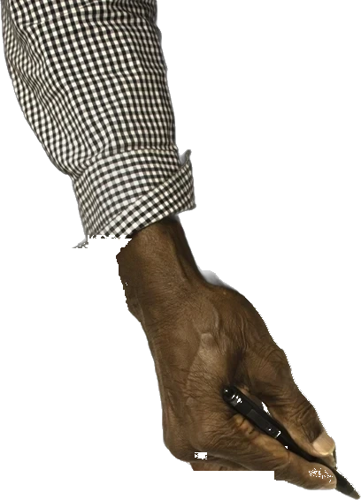
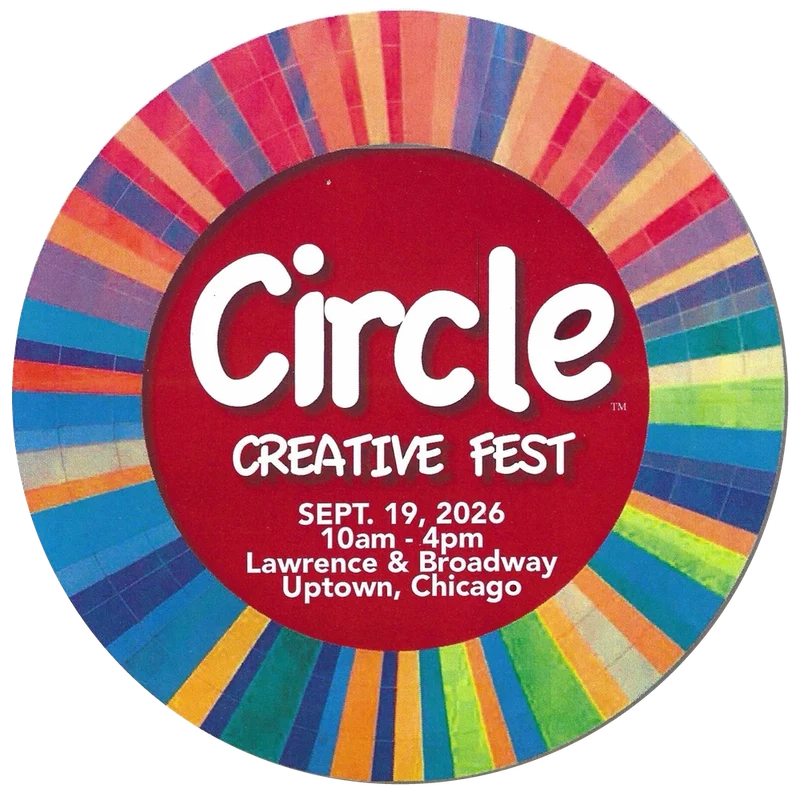

Lowell’s
Circle
Circle
We’re
Looking
We’re looking
for people
who like to draw,
and dance and write
and take photos
and speak.
And the people who support those that do.
No title, portfolio or permission needed.
You in?
If you can read this, get in the Circle.